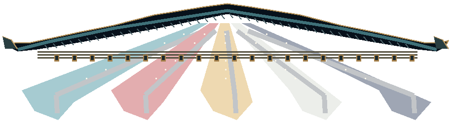

秘靈
비령
THE UNSEEN BLOODLINE
✦
退魔 實習 / 開拓
✦
퇴마 실습
↗
개척
↗
샘플 프로필
人

秘靈 · 退魔 實習 / 開拓 DEMO
「
비령 · 전투와 개척
」
퇴마 실습 1인 전투 3종 · 전투 튜토리얼 · 산길 1~4
江原道 · 飛靈山
體驗 開放 · OFFLINE
샘플 캐릭터 · 로그인 불필요
원본 비령 vC.05 기반 독립 체험판
실습 안내
모든 육조 스탯이 3인 견습생으로 시작합니다. 실습 기록은 이 브라우저에만 보관됩니다.
◆ ◆ ◆
赤 · 비령산 금역
퇴마 실습
개척으로 이동
전투 안내를 통해 기본 규칙을 익히거나, 1인 전투 세 가지에 도전할 수 있습니다.
실습 데이터를 불러오는 중입니다.
秘靈 / SAMPLE CHARACTER
견습생의 기록
×